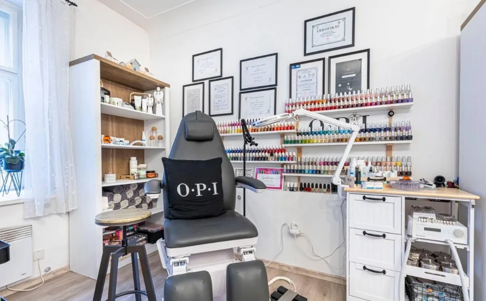
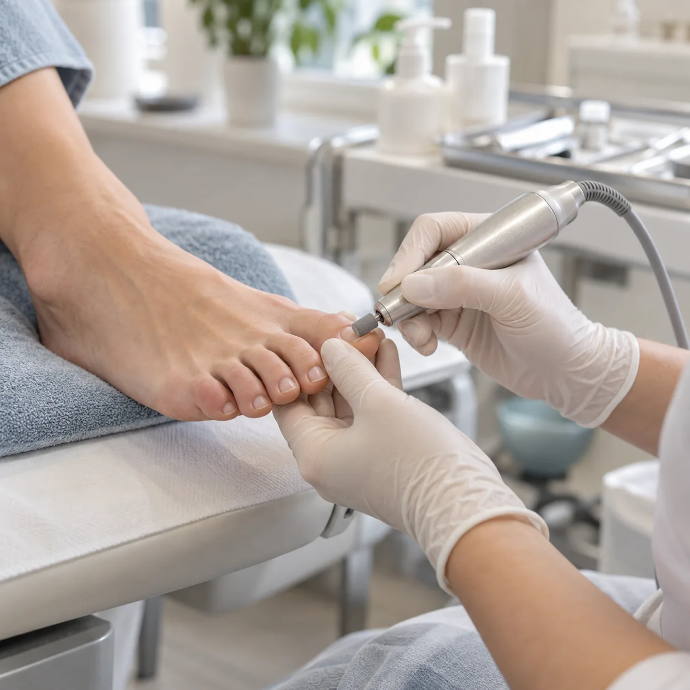
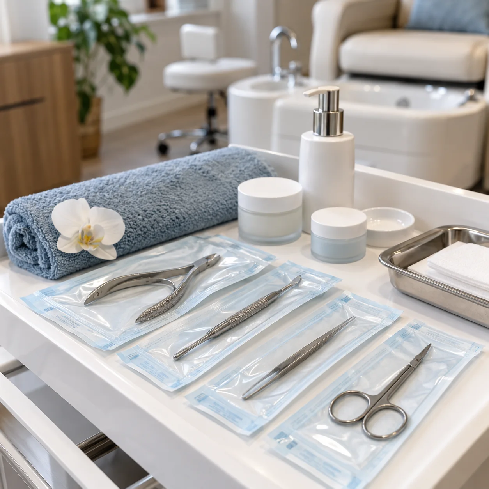

Přístrojová pedikúra
Šetrné ošetření nehtů a pokožky chodidel profesionálním přístrojem, bez namáčení.
Pedikúra & podologie · Trutnov
Odborná péče o chodidla pro dospělé i děti, včetně klientů s diabetem. Citlivě, bezpečně a s respektem k vašim potřebám.

Služby
Od pravidelné pedikúry po řešení konkrétních potíží. Vhodný postup vždy zvolíme podle aktuálního stavu vašich chodidel.
Šetrné ošetření nehtů a pokožky chodidel profesionálním přístrojem, bez namáčení.
Specializovaná péče při kuřích okách, prasklinách, ztluštělých či jinak problematických nehtech.
Tamponády a nehtová rovnátka různých typů pro citlivou nápravu a úlevu.
Výroba silikonových meziprstních korektorů a náhrady poškozených nehtových plotének.
Mokrá pedikúra, parafínový zábal, maska nebo lakování pro upravená a odpočatá chodidla.
Orientační ceník
Cena se odvíjí od rozsahu a náročnosti ošetření. Přesnou částku domluvíme předem.
Kompletní nabídka a rezervace

Jana Bejrová
V Andělském pedikérském salónu pečujeme o dospělé i děti, klienty s diabetem a osoby s tělesným či mentálním postižením. Každé ošetření začíná tím nejdůležitějším — nasloucháním.
Salon je certifikovaný pro poskytované služby, průběžně se vzdělává v oboru a je členem Podologické společnosti. Důraz klademe na bezpečnost, hygienu a čtyřfázovou sterilizaci nástrojů.
„Profesionální přístup, perfektní péče, příjemné prostředí!“ — Martina M., ověřené hodnocení na Notinu
Dárkové poukazy
Poukaz na péči o chodidla je milý a praktický dárek. Dostupnost a hodnotu poukazu si ověřte telefonicky.
Objednání a kontakt
Nejjednodušší je vybrat si volný termín online. Pokud si nejste jistí vhodnou službou, zavolejte.
V centru města, v podloubí od Belly směrem k Mobydicku. Parkování je možné před salonem nebo v okolí.
Otevřít v mapěPo–Pá 7:00–19:00
So 7:00–13:00
Ne zavřeno
Hotově, kartou
nebo QR platbou